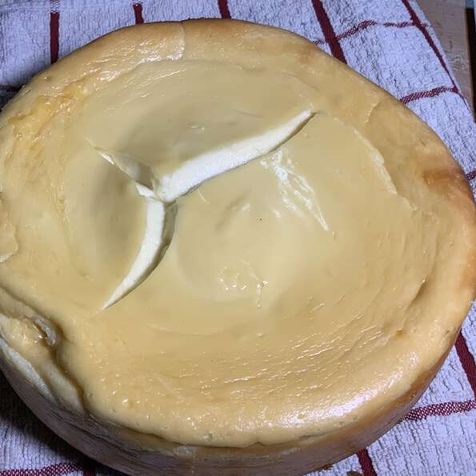

Cheesecake

Description
A basic thick cheesecake. Serve with your favorite fruit topping.
Ingredients
- 1 cup graham cracker crumbs
- ¼ cup finely chopped walnuts
- ¼ cup finely chopped walnuts
- 1 tablespoon ground cinnamon
- ½ teaspoon ground nutmeg
- 5 tablespoons butter, melted
- 3 (8 ounce) packages cream cheese
- 1 cup white sugar
- 1 cup sour cream
- 1 cup heavy cream
- 3 tablespoons all-purpose flour
- 1 tablespoon vanilla extract
- 3 eggs